失落人间早睡的猫 · V004 Canvas 流畅版
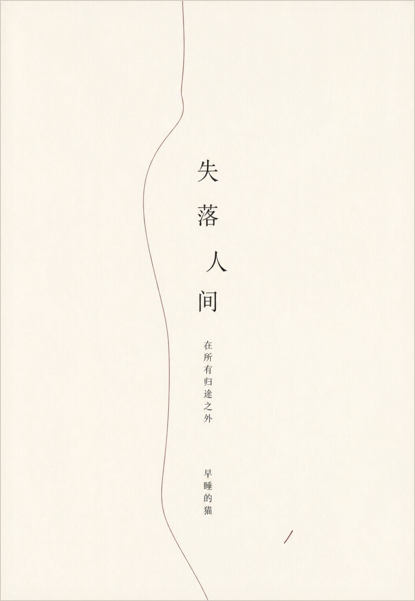
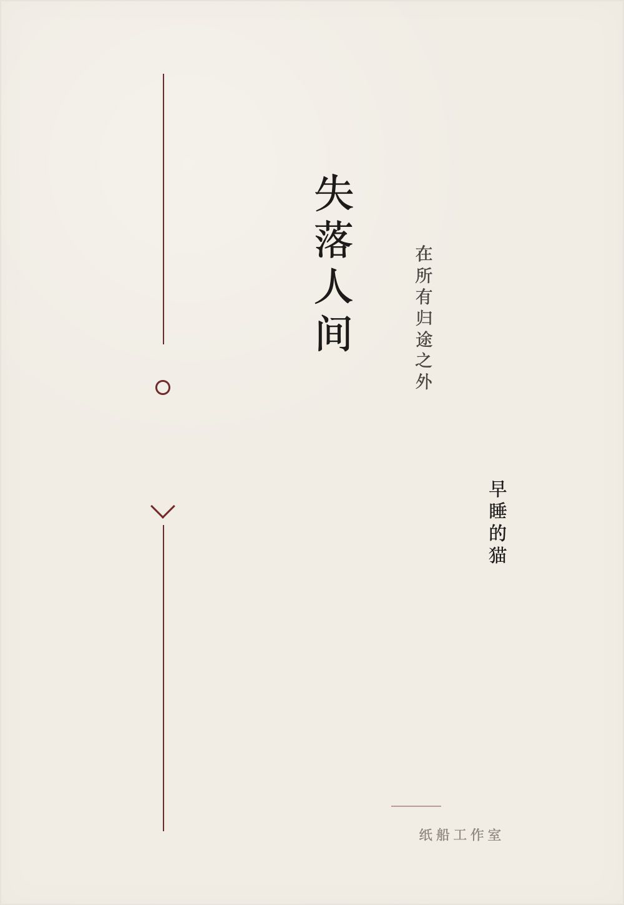
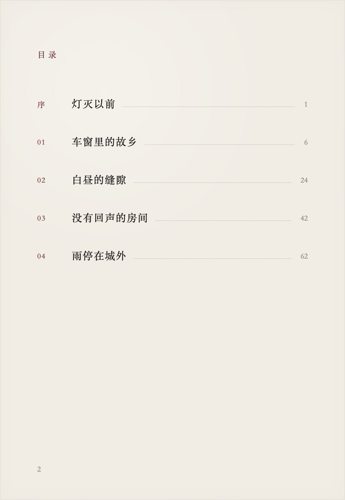
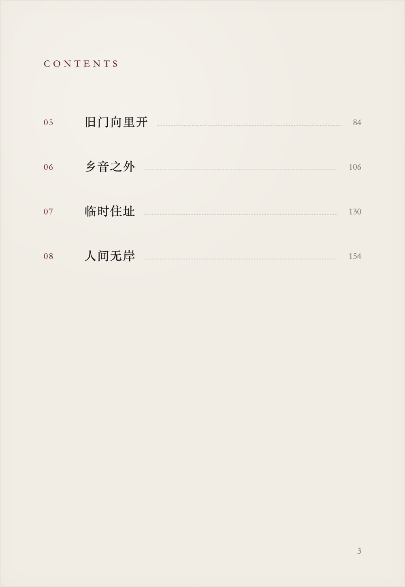
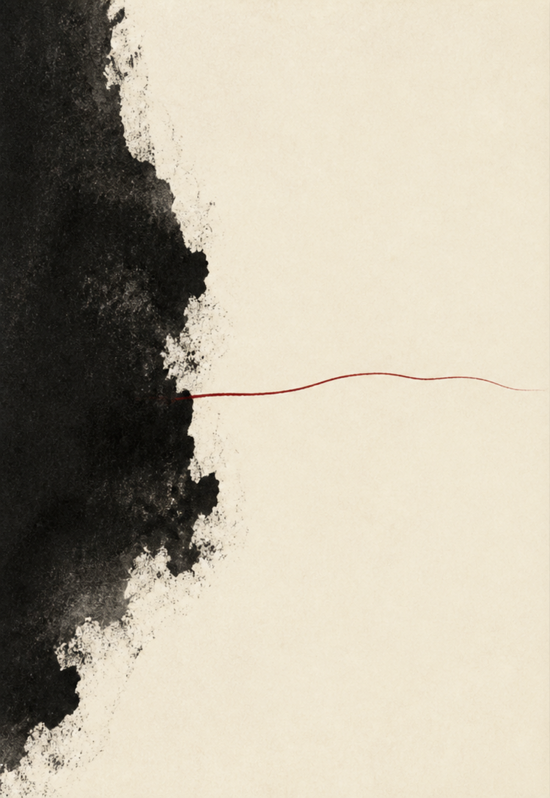
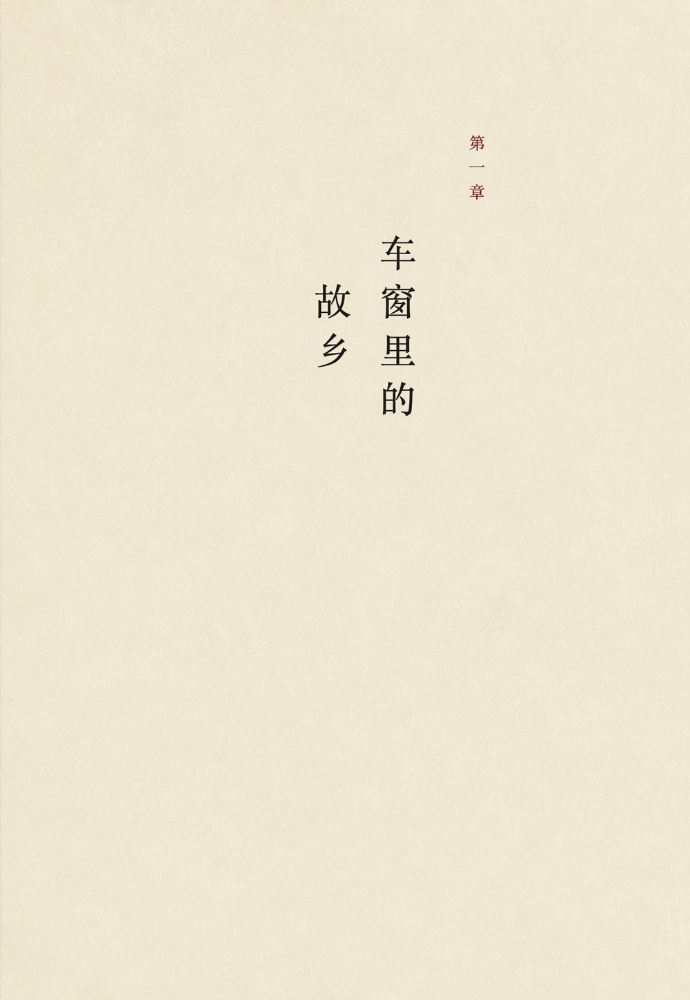
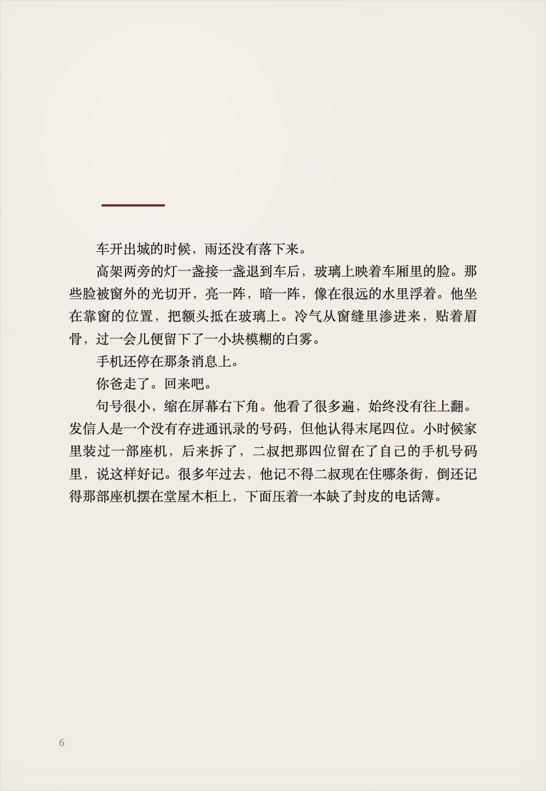
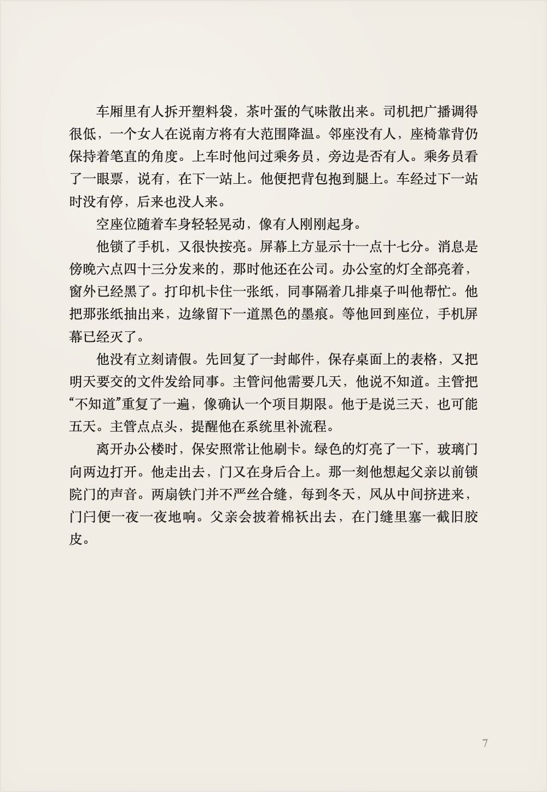
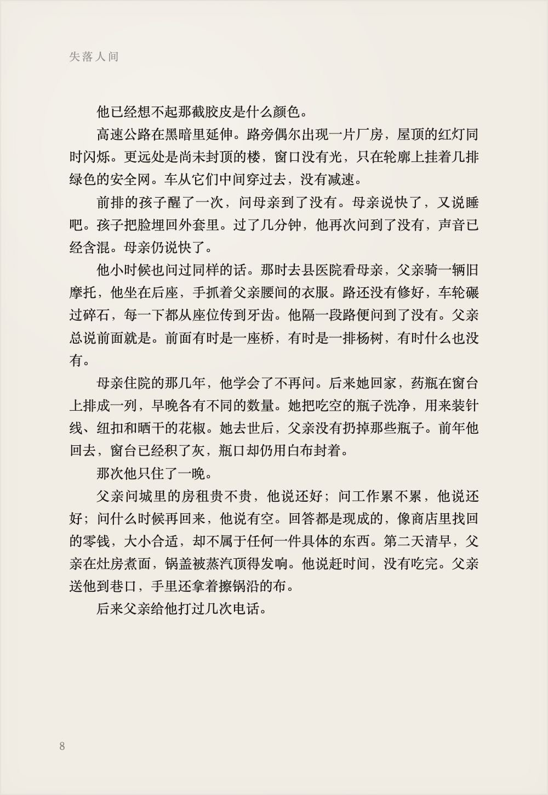
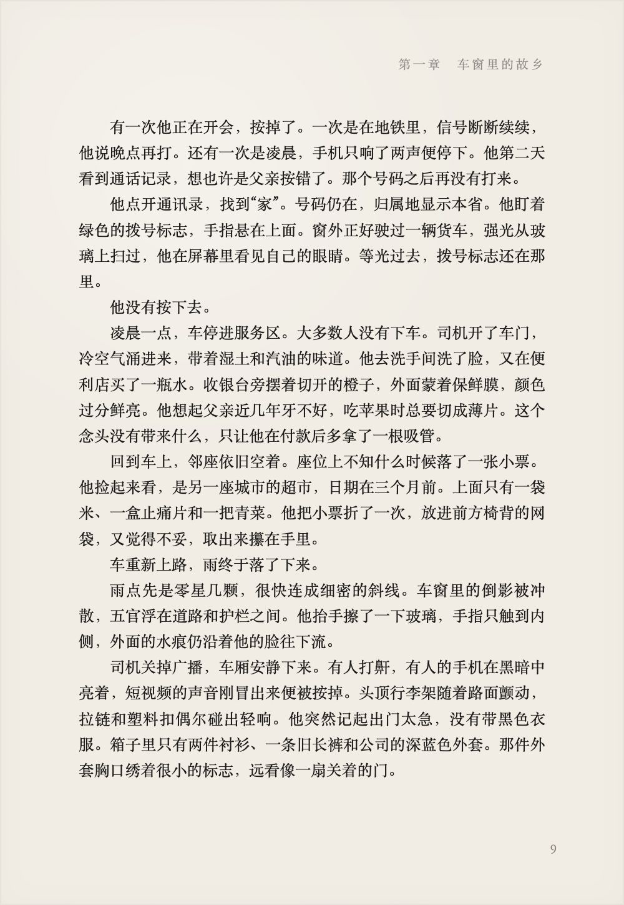
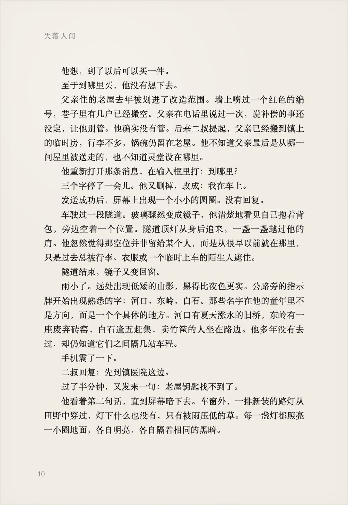
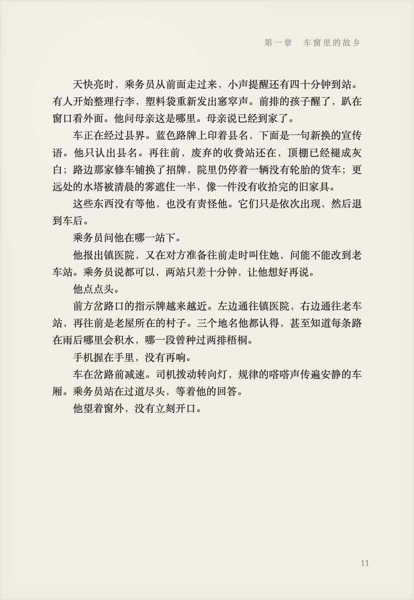
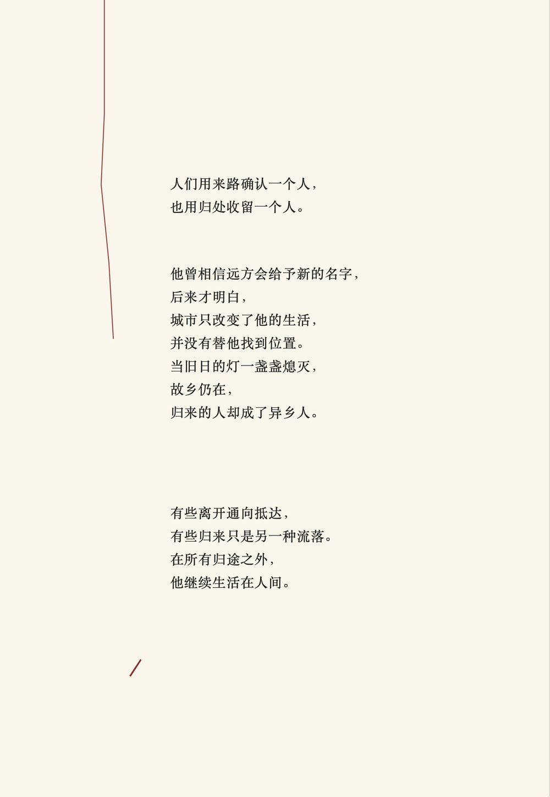













失落人间 在所有归途之外 早睡的猫 纸船工作室
目录 序 灯灭以前 1 01 车窗里的故乡 6 02 白昼的缝隙 24 03 没有回声的房间 42 04 雨停在城外 62 2
CONTENTS 05 旧门向里开 84 06 乡音之外 106 07 临时住址 130 08 人间无岸 154 3
第一章 车窗里的 故乡
车开出城的时候，雨还没有落下来。 高架两旁的灯一盏接一盏退到车后，玻璃上映着车厢里的脸。那些脸被窗外的光切开，亮一阵，暗一阵，像在很远的水里浮着。他坐在靠窗的位置，把额头抵在玻璃上。冷气从窗缝里渗进来，贴着眉骨，过一会儿便留下了一小块模糊的白雾。 手机还停在那条消息上。 你爸走了。回来吧。 句号很小，缩在屏幕右下角。他看了很多遍，始终没有往上翻。发信人是一个没有存进通讯录的号码，但他认得末尾四位。小时候家里装过一部座机，后来拆了，二叔把那四位留在了自己的手机号码里，说这样好记。很多年过去，他记不得二叔现在住哪条街，倒还记得那部座机摆在堂屋木柜上，下面压着一本缺了封皮的电话簿。 6
车厢里有人拆开塑料袋，茶叶蛋的气味散出来。司机把广播调得很低，一个女人在说南方将有大范围降温。邻座没有人，座椅靠背仍保持着笔直的角度。上车时他问过乘务员，旁边是否有人。乘务员看了一眼票，说有，在下一站上。他便把背包抱到腿上。车经过下一站时没有停，后来也没人来。 空座位随着车身轻轻晃动，像有人刚刚起身。 他锁了手机，又很快按亮。屏幕上方显示十一点十七分。消息是傍晚六点四十三分发来的，那时他还在公司。办公室的灯全部亮着，窗外已经黑了。打印机卡住一张纸，同事隔着几排桌子叫他帮忙。他把那张纸抽出来，边缘留下一道黑色的墨痕。等他回到座位，手机屏幕已经灭了。 他没有立刻请假。先回复了一封邮件，保存桌面上的表格，又把明天要交的文件发给同事。主管问他需要几天，他说不知道。主管把“不知道”重复了一遍，像确认一个项目期限。他于是说三天，也可能五天。主管点点头，提醒他在系统里补流程。 离开办公楼时，保安照常让他刷卡。绿色的灯亮了一下，玻璃门向两边打开。他走出去，门又在身后合上。那一刻他想起父亲以前锁院门的声音。两扇铁门并不严丝合缝，每到冬天，风从中间挤进来，门闩便一夜一夜地响。父亲会披着棉袄出去，在门缝里塞一截旧胶皮。 7
失落人间 他已经想不起那截胶皮是什么颜色。 高速公路在黑暗里延伸。路旁偶尔出现一片厂房，屋顶的红灯同时闪烁。更远处是尚未封顶的楼，窗口没有光，只在轮廓上挂着几排绿色的安全网。车从它们中间穿过去，没有减速。 前排的孩子醒了一次，问母亲到了没有。母亲说快了，又说睡吧。孩子把脸埋回外套里。过了几分钟，他再次问到了没有，声音已经含混。母亲仍说快了。 他小时候也问过同样的话。那时去县医院看母亲，父亲骑一辆旧摩托，他坐在后座，手抓着父亲腰间的衣服。路还没有修好，车轮碾过碎石，每一下都从座位传到牙齿。他隔一段路便问到了没有。父亲总说前面就是。前面有时是一座桥，有时是一排杨树，有时什么也没有。 母亲住院的那几年，他学会了不再问。后来她回家，药瓶在窗台上排成一列，早晚各有不同的数量。她把吃空的瓶子洗净，用来装针线、纽扣和晒干的花椒。她去世后，父亲没有扔掉那些瓶子。前年他回去，窗台已经积了灰，瓶口却仍用白布封着。 那次他只住了一晚。 父亲问城里的房租贵不贵，他说还好；问工作累不累，他说还好；问什么时候再回来，他说有空。回答都是现成的，像商店里找回的零钱，大小合适，却不属于任何一件具体的东西。第二天清早，父亲在灶房煮面，锅盖被蒸汽顶得发响。他说赶时间，没有吃完。父亲送他到巷口，手里还拿着擦锅沿的布。 后来父亲给他打过几次电话。 8
第一章 车窗里的故乡 有一次他正在开会，按掉了。一次是在地铁里，信号断断续续，他说晚点再打。还有一次是凌晨，手机只响了两声便停下。他第二天看到通话记录，想也许是父亲按错了。那个号码之后再没有打来。 他点开通讯录，找到“家”。号码仍在，归属地显示本省。他盯着绿色的拨号标志，手指悬在上面。窗外正好驶过一辆货车，强光从玻璃上扫过，他在屏幕里看见自己的眼睛。等光过去，拨号标志还在那里。 他没有按下去。 凌晨一点，车停进服务区。大多数人没有下车。司机开了车门，冷空气涌进来，带着湿土和汽油的味道。他去洗手间洗了脸，又在便利店买了一瓶水。收银台旁摆着切开的橙子，外面蒙着保鲜膜，颜色过分鲜亮。他想起父亲近几年牙不好，吃苹果时总要切成薄片。这个念头没有带来什么，只让他在付款后多拿了一根吸管。 回到车上，邻座依旧空着。座位上不知什么时候落了一张小票。他捡起来看，是另一座城市的超市，日期在三个月前。上面只有一袋米、一盒止痛片和一把青菜。他把小票折了一次，放进前方椅背的网袋，又觉得不妥，取出来攥在手里。 车重新上路，雨终于落了下来。 雨点先是零星几颗，很快连成细密的斜线。车窗里的倒影被冲散，五官浮在道路和护栏之间。他抬手擦了一下玻璃，手指只触到内侧，外面的水痕仍沿着他的脸往下流。 司机关掉广播，车厢安静下来。有人打鼾，有人的手机在黑暗中亮着，短视频的声音刚冒出来便被按掉。头顶行李架随着路面颤动，拉链和塑料扣偶尔碰出轻响。他突然记起出门太急，没有带黑色衣服。箱子里只有两件衬衫、一条旧长裤和公司的深蓝色外套。那件外套胸口绣着很小的标志，远看像一扇关着的门。 9
失落人间 他想，到了以后可以买一件。 至于到哪里买，他没有想下去。 父亲住的老屋去年被划进了改造范围。墙上喷过一个红色的编号，巷子里有几户已经搬空。父亲在电话里说过一次，说补偿的事还没定，让他别管。他确实没有管。后来二叔提起，父亲已经搬到镇上的临时房，行李不多，锅碗仍留在老屋。他不知道父亲最后是从哪一间屋里被送走的，也不知道灵堂设在哪里。 他重新打开那条消息，在输入框里打：到哪里？ 三个字停了一会儿。他又删掉，改成：我在车上。 发送成功后，屏幕上出现一个小小的圆圈。没有回复。 车驶过一段隧道。玻璃骤然变成镜子，他清楚地看见自己抱着背包，旁边空着一个位置。隧道顶灯从身后追来，一盏一盏越过他的肩。他忽然觉得那空位并非留给某个人，而是从很早以前就在那里，只是过去总被行李、衣服或一个临时上车的陌生人遮住。 隧道结束，镜子又变回窗。 雨小了。远处出现低矮的山影，黑得比夜色更实。公路旁的指示牌开始出现熟悉的字：河口、东岭、白石。那些名字在他的童年里不是方向，而是一个个具体的地方。河口有夏天涨水的旧桥，东岭有一座废弃砖窑，白石逢五赶集，卖竹筐的人坐在路边。他多年没有去过，却仍知道它们之间隔几站车程。 手机震了一下。 二叔回复：先到镇医院这边。 过了半分钟，又发来一句：老屋钥匙找不到了。 他看着第二句话，直到屏幕暗下去。车窗外，一排新装的路灯从田野中穿过，灯下什么也没有，只有被雨压低的草。每一盏灯都照亮一小圈地面，各自明亮，各自隔着相同的黑暗。 10
第一章 车窗里的故乡 天快亮时，乘务员从前面走过来，小声提醒还有四十分钟到站。有人开始整理行李，塑料袋重新发出窸窣声。前排的孩子醒了，趴在窗口看外面。他问母亲这是哪里。母亲说已经到家了。 车正在经过县界。蓝色路牌上印着县名，下面是一句新换的宣传语。他只认出县名。再往前，废弃的收费站还在，顶棚已经褪成灰白；路边那家修车铺换了招牌，院里仍停着一辆没有轮胎的货车；更远处的水塔被清晨的雾遮住一半，像一件没有收拾完的旧家具。 这些东西没有等他，也没有责怪他。它们只是依次出现，然后退到车后。 乘务员问他在哪一站下。 他报出镇医院，又在对方准备往前走时叫住她，问能不能改到老车站。乘务员说都可以，两站只差十分钟，让他想好再说。 他点点头。 前方岔路口的指示牌越来越近。左边通往镇医院，右边通往老车站，再往前是老屋所在的村子。三个地名他都认得，甚至知道每条路在雨后哪里会积水，哪一段曾种过两排梧桐。 手机握在手里，没有再响。 车在岔路前减速。司机拨动转向灯，规律的嗒嗒声传遍安静的车厢。乘务员站在过道尽头，等着他的回答。 他望着窗外，没有立刻开口。 11
纸船工作室